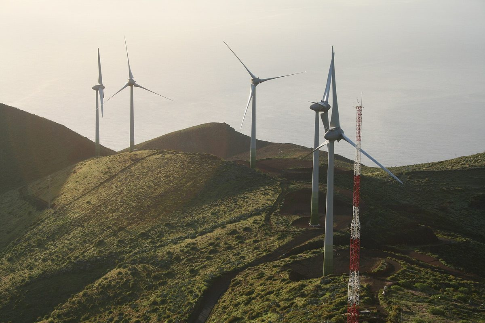

"섬 재생에너지 성패는 기술보다 주민 참여와 준비 단계"…IEA PVPS 보고서, 섬 11곳에서 성공 요인 111개 추려

성공 요인 거의 절반이 첫 삽 전 준비 단계에…지역 주도 인물·전 기간 이해관계자 참여·장기 계통 계획·계통 보강 4가지가 거의 공통, 공동체 소유 풍력의 삼쇠·조합원 소유 전력회사의 코디악 등 분석
국제에너지기구 태양광발전 협력 프로그램(IEA PVPS)의 Task 18이 재생에너지 비중이 매우 높거나 그에 가까운 섬 11곳을 분석한 새 보고서를 내고, 보고서를 쓴 쪽이 직접 기고문으로 요지를 소개했다. IEA PVPS 보고서에 따르면 주민 88명인 사모아 아폴리마 마을부터 인구 5만7,000명이 넘는 덴마크 롤란섬까지, 섬 전력을 재생에너지로 거의 다 채우는 데 성패를 가른 것은 기술만이 아니라 사회·정치·조직 조건이었다. 미국 알래스카 코디악섬은 조합원 소유 전력회사가 수력·풍력을 섞어 99~100%를 재생에너지로 공급하고, 덴마크 삼쇠섬은 거의 전적으로 공동체 소유 풍력기와 시민 투자로, 일본 야쿠시마는 소수력만으로 100%를 이뤘으며, 스페인 엘이에로섬은 풍력과 양수 저장을 묶는 등 섬마다 방식이 달랐다. 연구진은 준비·설계·실행·점검평가 4단계와 사회·정치·기술·경제·환경 5분야를 엮은 틀에 학술 문헌 60편 넘는 검토와 사례 분석, 섬 실무자 심층 면담 5건을 더해 성공 요인 111개를 뽑았는데, 그 가운데 거의 절반이 설비를 세우기 전 준비 단계에 몰려 있었다. 핵심 요인 13개 가운데 거의 모든 섬에 공통인 것은 지역 주도 인물, 사업 전 기간에 걸친 이해관계자 참여, 장기 계통 계획, 변동성 재생에너지를 위한 계통 보강 4가지였고, 분야별로는 기술 요인이 41개로 가장 많았다. 보고서는 "보편적인 지침은 없다"고 결론지으며, 여러 해 계획을 이어 갈 지역 기관과 단기 원조에 기대지 않는 자금 같은 전제가 약한 작고 외딴 저소득 섬, 특히 글로벌 사우스에서 이런 성공을 따라 하기가 가장 어렵다고 짚었다.
시민에너지 관점
성공 요인 111개 가운데 거의 절반이 첫 삽을 뜨기 전에 있다는 것은, 주민 설명과 조직에 쓰는 시간과 돈이 사업을 늦추는 비용이 아니라 사업의 몸통이라는 뜻이다. 주민 참여가 일정을 늦춘다는 걱정이 있지만, 보고서는 오히려 계획·참여 단계에 힘을 덜 쓴 것이 뒤에 갈등을 부르는 가장 뚜렷한 원인 가운데 하나라고 봤다. 공동체 소유 풍력의 삼쇠와 조합원 소유 전력회사의 코디악이 성공 사례에 든 것은, 주민이 주인인 구조가 여러 해에 걸친 참여와 지역 주도 인물을 붙잡아 두기 쉽다는 점을 보여 준다. 국내 섬과 농촌의 재생에너지 사업도 공모 예산에 준비 단계 주민 교육·조직 비용을 따로 잡고, 마을 안에서 사업을 이끌 사람을 키우는 데서 시작해야 한다.
출처: pv magazine USA 2026-10-29 IEA PVPS Task 18 기고 원문 보기
「島の再エネの成否は技術より住民参加と準備段階」…IEA PVPS報告書、11の島から成功要因111項目を抽出
成功要因の半分近くが着工前の準備段階に…地域のリーダー・全期間の利害関係者参加・長期の系統計画・系統強化の4つがほぼ共通、地域所有の風力のサムソ島や組合員所有の電力会社のコディアック島などを分析
国際エネルギー機関の太陽光発電システム研究協力プログラム（IEA PVPS）のTask 18が、再生可能エネルギーの比率が非常に高いか、それに近い11の島を分析した新しい報告書をまとめ、執筆側が寄稿で要旨を紹介した。IEA PVPSの報告書によると、住民88人のサモア・アポリマ村から人口5万7,000人を超えるデンマーク・ロラン島まで、島の電力をほぼ再エネで賄えるかどうかを分けたのは技術だけでなく、社会・政治・組織の条件だった。米アラスカ州コディアック島では組合員所有の電力会社が水力と風力を組み合わせて99～100%を再エネで供給し、デンマークのサムソ島はほぼ全面的に地域所有の風車と市民の投資で、日本の屋久島は小水力だけで100%を達成し、スペインのエル・イエロ島は風力と揚水発電を組み合わせるなど、島ごとに方式は異なっていた。研究チームは準備・設計・実施・モニタリング評価の4段階と社会・政治・技術・経済・環境の5分野を組み合わせた枠組みに、60本を超える学術文献の検討、事例分析、島の実務者への詳細インタビュー5件を加えて成功要因111項目を抽出し、その半分近くが設備を建てる前の準備段階に集中していた。13の主要要因のうちほぼすべての島に共通していたのは、地域のリーダー、事業の全期間にわたる利害関係者の参加、長期の系統計画、変動型再エネのための系統強化の4つで、分野別では技術要因が41項目で最も多かった。報告書は「普遍的な指針はない」と結論づけ、何年もの計画を続けられる地域の機関や短期の援助に頼らない資金といった前提が弱い、小さく遠隔で低所得の島、特にグローバル・サウスでこうした成功を再現するのが最も難しいと指摘した。
市民エネルギーの視点
成功要因111項目の半分近くが着工前にあるということは、住民への説明や組織づくりにかける時間と費用は事業を遅らせるコストではなく、事業の本体だということだ。住民参加は工程を遅らせるという懸念もあるが、報告書はむしろ計画・参加の段階に力を注がなかったことが、後の対立を招く最もはっきりした原因の一つだとみている。地域所有の風力のサムソ島と組合員所有の電力会社のコディアック島が成功例に入っているのは、住民が持ち主である仕組みが、何年にもわたる参加と地域のリーダーをつなぎとめやすいことを示している。韓国の島や農村の再エネ事業も、公募予算に準備段階の住民教育・組織づくりの費用を別枠で組み、集落の中で事業を率いる人を育てるところから始めるべきだ。
出典: pv magazine USA 2026-10-29 IEA PVPS Task 18 寄稿 原文を読む
"海岛可再生能源成败关键在于居民参与和准备阶段，而非技术"…IEA PVPS报告从11座海岛梳理出111项成功因素
近半数成功因素集中在开工前的准备阶段…地方带头人、全周期利益相关方参与、长期电网规划、电网加强四项几乎共通，分析了社区所有风电的萨姆斯岛、社员所有电力公司的科迪亚克岛等
国际能源署光伏发电系统合作计划（IEA PVPS）第18任务组（Task 18）发布新报告，分析了可再生能源占比极高或接近极高的11座海岛，并由报告撰写方亲自撰文介绍要点。根据IEA PVPS的报告，从居民88人的萨摩亚阿波利马村，到人口超过5万7,000人的丹麦洛兰岛，决定海岛电力能否几乎全部来自可再生能源的，不只是技术，还有社会、政治和组织条件。美国阿拉斯加科迪亚克岛由社员所有的电力公司结合水电与风电，可再生能源供电比例达99~100%；丹麦萨姆斯岛几乎完全依靠社区所有的风机和市民投资，日本屋久岛仅靠小水电就实现100%，西班牙耶罗岛则把风电与抽水蓄能结合起来，各岛做法不尽相同。研究团队以准备、设计、实施、监测评估4个阶段与社会、政治、技术、经济、环境5个领域交织的框架，结合对60多篇学术文献的梳理、案例分析和对海岛实务人员的5次深度访谈，提炼出111项成功因素，其中近一半集中在设备建设之前的准备阶段。在13项关键因素中，几乎所有海岛共有的是地方带头人、贯穿项目全周期的利益相关方参与、长期电网规划，以及为波动性可再生能源加强电网这4项；按领域划分，技术因素最多，有41项。报告的结论是"没有普遍适用的指南"，并指出在能持续多年规划的地方机构、不依赖短期援助的资金等前提较弱的偏远、小型、低收入海岛，尤其是全球南方，复制这种成功最为困难。
市民能源视角
111项成功因素中近一半出现在开工之前，这意味着花在向居民说明和组织居民上的时间和资金，不是拖慢项目的成本，而是项目的主体。有人担心居民参与会拖延进度，但报告恰恰认为，在规划和参与阶段投入不足，是日后引发冲突最明显的原因之一。社区所有风电的萨姆斯岛和社员所有电力公司的科迪亚克岛都名列成功案例，说明居民当家作主的结构更容易留住多年的参与和地方带头人。韩国海岛和农村的可再生能源项目，也应在公开招募预算中单列准备阶段的居民教育和组织费用，从在村里培养带头推动项目的人做起。
来源: pv magazine USA 2026-10-29 IEA PVPS Task 18 供稿 查看原文
"Island renewables succeed on community engagement and preparation more than technology": IEA PVPS report draws 111 success factors from 11 islands
Nearly half of success factors fall in the preparation phase before construction; local champions, stakeholder engagement across the whole project, long-term grid planning and grid strengthening are near-universal, with cases including community-owned wind on Samsø and a member-owned utility on Kodiak
Task 18 of the International Energy Agency's Photovoltaic Power Systems Programme (IEA PVPS) has published a new report analysing 11 islands that have reached, or come close to, very high renewable shares, and the report's authors have summarised it in a contributed article. According to the IEA PVPS report, from the 88-person village of Apolima in Samoa to Denmark's Lolland, home to more than 57,000 people, what decided whether an island could run almost entirely on renewables was not technology alone but social, political and organisational conditions. On Alaska's Kodiak Island a member-owned utility combines hydro and wind to reach 99-100% renewable supply, Denmark's Samsø got there almost entirely through community-owned wind turbines and citizen investment, Japan's Yakushima reaches 100% with small hydropower alone, and Spain's El Hierro pairs wind with pumped hydro, showing how approaches vary from island to island. Using a framework that crosses four phases (preparation, design, implementation, monitoring and evaluation) with five categories (social, political, technical, economic and environmental), together with a review of more than 60 academic publications, case studies and five in-depth interviews with island practitioners, the researchers identified 111 success factors, nearly half of which sit in the preparation phase before any equipment goes up. Of 13 key factors, four were close to universal: local champions, stakeholder engagement sustained across the whole project, long-term system planning and grid strengthening for variable renewables, while technical factors formed the largest category at 41. The report concludes that "there is no universal guideline," noting that success will be hardest to replicate on small, remote, lower-income islands, particularly in the Global South, where preconditions such as a local institution able to sustain multi-year planning and financing not dependent on short-term aid are weakest.
Citizen Energy View
That nearly half of the 111 success factors come before the first shovel hits the ground means the time and money spent informing and organising residents is not a cost that delays a project but the body of the project itself. There is a worry that community participation slows schedules, yet the report finds that under-resourcing the planning and engagement phase is one of the clearest causes of later friction. The presence of community-owned wind on Samsø and a member-owned utility on Kodiak among the success stories suggests that structures in which residents are the owners make it easier to hold on to years of engagement and to local champions. Renewable energy projects on Korea's islands and in its rural areas should likewise set aside a separate budget line for resident education and organising in the preparation phase, and start by developing people within the village who can lead the project.
Source: pv magazine USA 2026-10-29 Contributed by IEA PVPS Task 18 Read the original